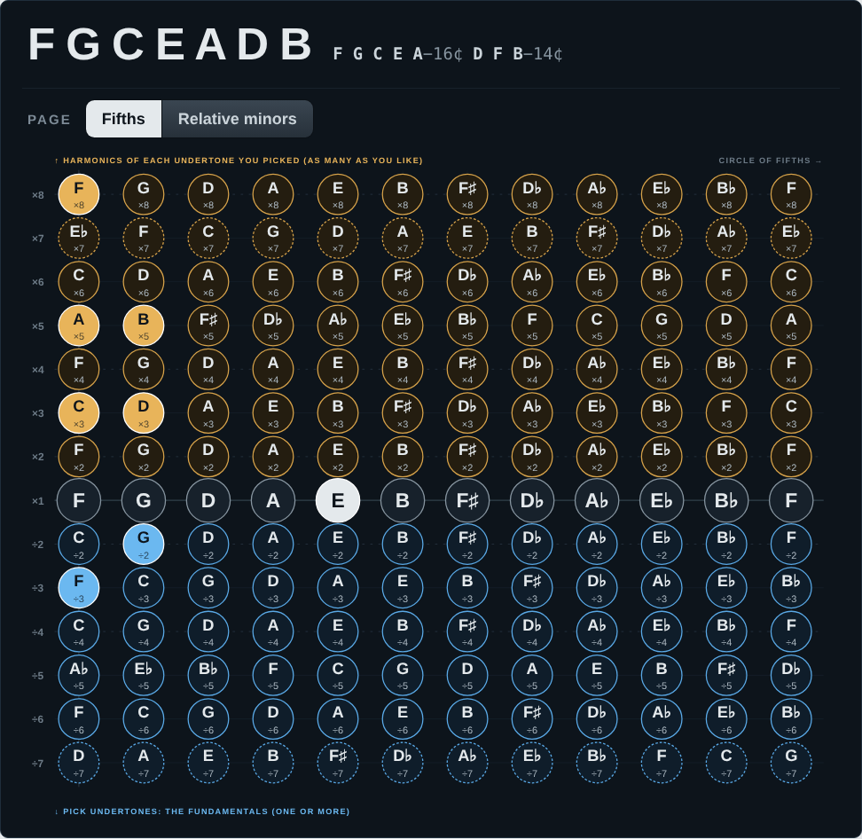
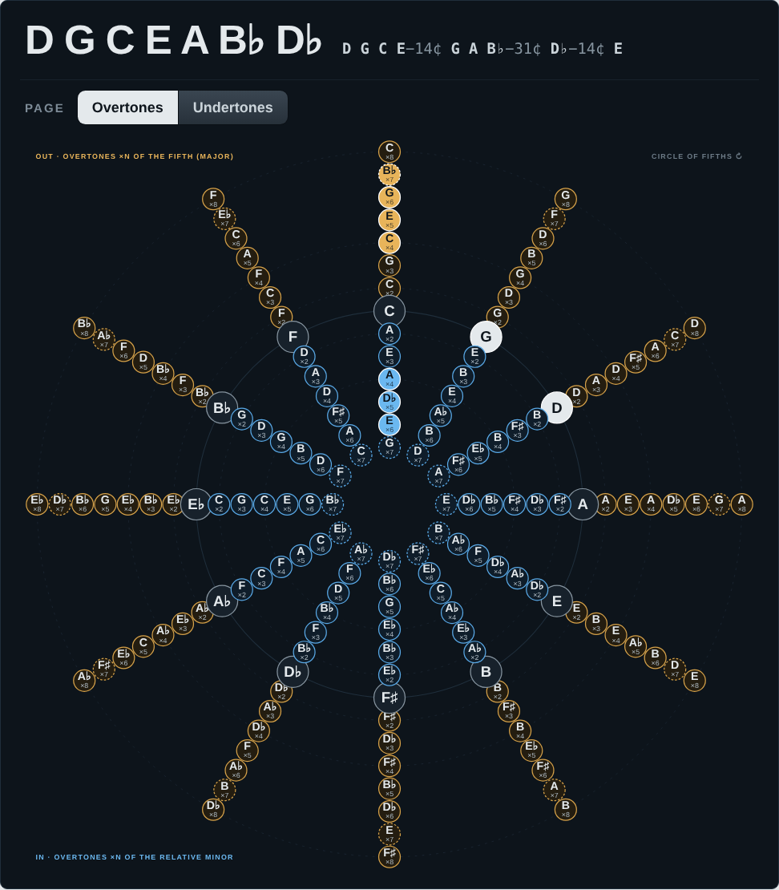
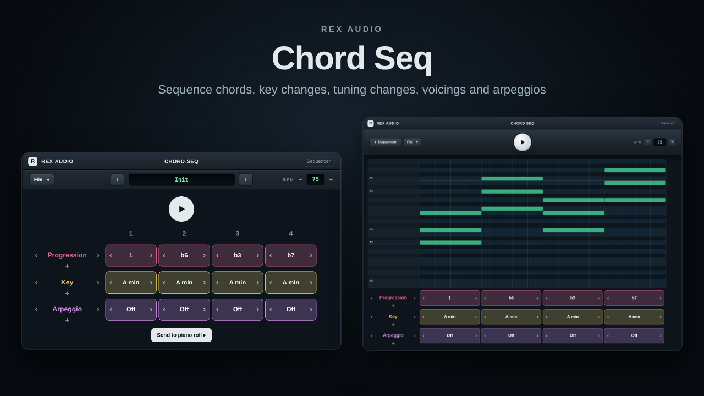
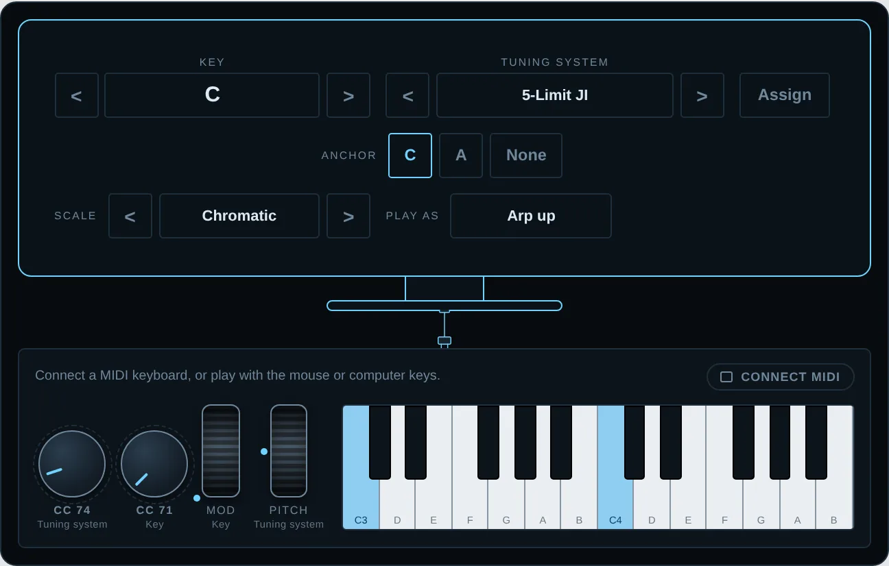

Play them in your browser
Harmony, tuning and chord progressions you can hear: two ways to play the harmonic series on the circle of fifths, a chord sequencer, and tuning presets with the harmonic series of any key.

Harmonic Keyboard · design oneA column for each fifth. Pick undertones as the fundamental, then any of their harmonics, with a page for the fifths and one for their relative minors.
Open the Harmonic Grid →
Harmonic Keyboard · design twoThe circle of fifths itself. Overtones of each fifth go out and those of its relative minor come in, with a second page for undertones.
Open the Harmonic Circle of Fifths →
PluginSequence chords, key changes, tuning changes, voicings and arpeggios, with presets you can keep in your browser.
Open ChordSeq →
TuningBrowse tuning presets, pure fifths from any key, or play the harmonic series on your keyboard.
Open Tunings →